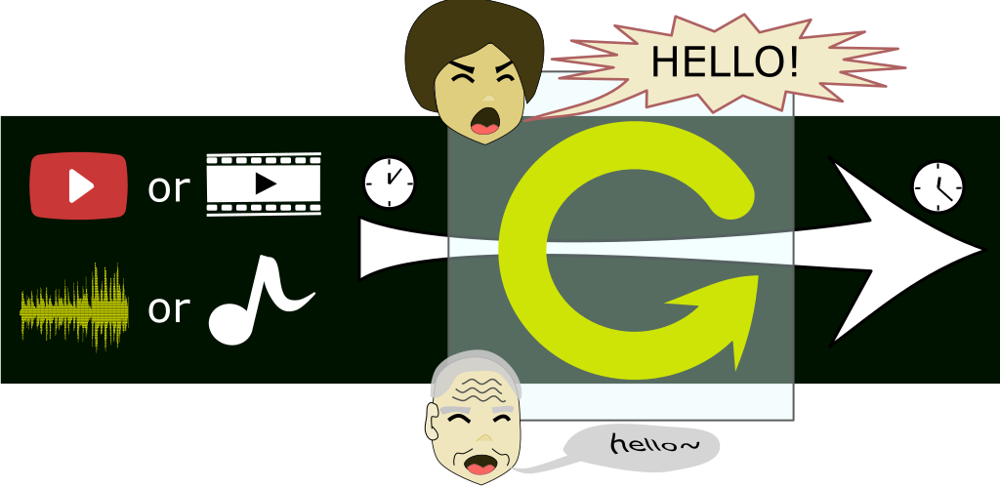

Basic concept
Just as this figure shows, the media can be a stream on the network or of your local file. This App will hold the link of that media and the user can attach one or more pieces of Media Dot Paper (MDP) upon it.
Each piece of MDP can perform the action of repeating, changing the pace or uttering the subtitles input by the user with different pace, pitch and volume.
So, you can use this App to enrich your selected media. Have fun!
Link
To get clearer picture, please visit
Thanks.
Contact me
And if you find some bugs or have some good ideas, welcome you to
email to me.